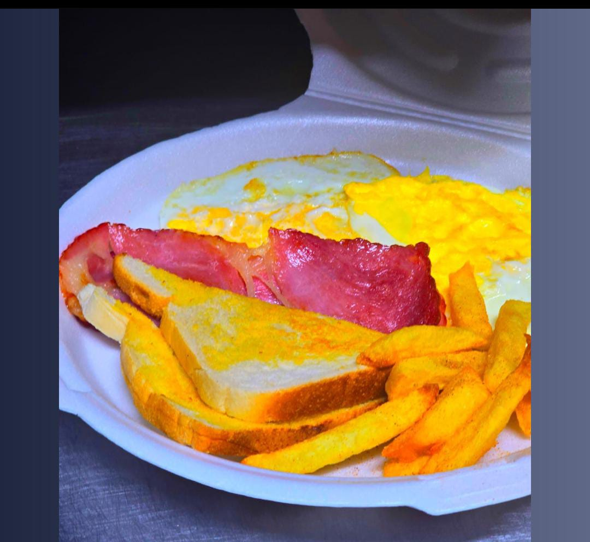
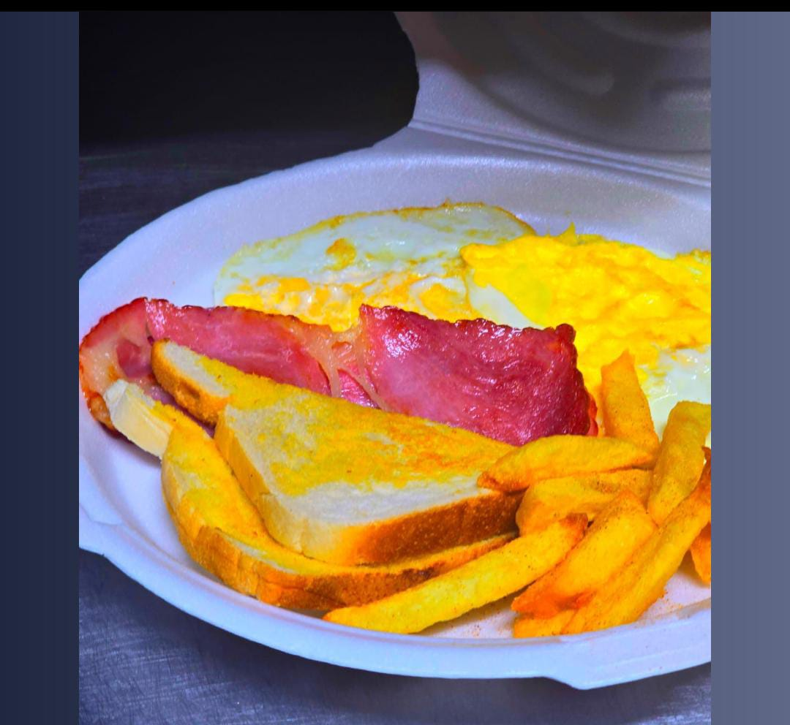

Motherland Eatery
Motherland Eatery is a small business located in Bloemfontein Central (94 St. George st George street). At Motherland Eatery we sell meals at affordable prices. Founded by the vision of creating an inclusive dinning experience for all, Motherland Eatery emerged from a disire to fill a gap in the market for affordable and satisfying meal optoins. Recognising the needs of our local students, we tailored our offerings to eater specially to famalies on budget, students seaking affordable eats and business proffesionals on the go. Our journey began with a simple yet profound mission: to provide quality meals thatdo not compromise on taste of affordability. This mission has guided us in developing our product offerings, including student meal deals, grab-and-go lunch boxes, quick breakfastitems, Kota specials and meal bundles, all designed to meet the needs of our valued customers. Our menu is diverse and caters to a wide range of tastes and preferences, from traditional South African dishes to modern fusion cuisine.
The words “Motherland Eatery” indicates that the business provides warm, comforting, traditional food to people who would like a meal. Motherland Eatery is a place where people can feel at home, enjoying hearty and soothing meals made with love that evokes a sense of warmth and belonging. At Motherland Eatery you can enjoy delicious, comforting food, surrounded by a cozy and welcoming atmosphere. The word “Motherland” also refers to a place where people can experience the flavors and traditions of their ancestral homeland or explore the cuisine of another culture. It is all about sharing a part of oneself, one’s culture, and one’s heart. It is a culinary experience that nourishes both the body and the soul.
 
